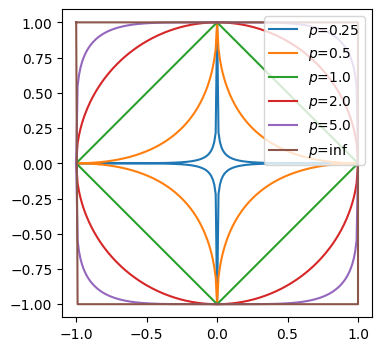

Fixed vs Floating point, vector norms, and stability concepts
Fixed point
Fixed point contains a 1-bit sign, m-bits integer, and n-bits fractional part:
\text{decimal} =
(-1)^{\text{sign}} \times
\Big(
\sum_{i=0}^{m-1} \text{integer}[i] \cdot base^{m-1-i} +
\sum_{i=0}^{n-1} \text{fractional}[i] \cdot base^{-i-1}
\Big)
range [-2^m + 2^{-n}, 2^m - 2^{-n}]
resolution 2^{-n}
total storage is m + n + 1 bits
def binary_fixed_point_to_decimal(x, m=8, n=8):""" x - binary string of size 1 + m + n m - size of an integer part n - sze of a fractional part """ sign_part, integer_part, fractional_part = x[0], x[1:m+1], x[m+1:m+n+1] sign_value = (-1) **int(sign_part) integer_value =sum([int(v) *2** ifor i, v inenumerate(integer_part[::-1]) ]) fractional_value =sum([int(v) *2**-(i +1)for i, v inenumerate(fractional_part) ])return sign_value * (integer_value + fractional_value)m, n =8, 8x ='00000010100100000'print(binary_fixed_point_to_decimal(x, m, n) ==5.125)
True
x ='11111111111111111'# Insert a string corresponding to a minimal possible valueprint(binary_fixed_point_to_decimal(x, m, n) ==-(2** m -2** (-n)))
True
x ='01111111111111111'# Insert a string corresponding to a maximal possible valueprint(binary_fixed_point_to_decimal(x, m, n) ==2** m -2** (-n))
True
x ='00000000000000001'# Insert a string corresponding to an absolute minimal but nonzero possible valueprint(binary_fixed_point_to_decimal(x, m, n) ==2** (-n))
True
Floating point
Floating point contains a 1-bit sign, m-bits exponent, and n-bits mantissa part:
exponent values that are all 0 and all 1 are reserved for special numbers: NaN, infinity, etc.
total storage is m + n + 1 bits
Half (float16) vs Single (float32) vs and Double (float32) Precision
float16 - 16 bit total: 1 for a sign, m = 5 for exponent and n = 10 for mantissa
float32 - 32 bits total: 1 for a sign, m = 8 for exponent and n = 23 for mantissa
float64 - 64 bits total: 1 for a sign, m = 11 for exponent and n = 52 for mantissa
def binary_floating_point_to_decimal(x, m=8, n=23):""" x - binary string of size 1 + m + n m - size of an exponent part n - sze of a mantissa part """ sign_part, exponent_part, mantissa_part = x[0], x[1:m+1], x[m+1:n+m+1] sign_value = (-1) **int(sign_part) mantissa_value =1for i, v inenumerate(mantissa_part): mantissa_value +=int(v) * (2**-(i +1)) exponent_value =0for i, v inenumerate(exponent_part): exponent_value +=int(v) *2** i exponent_value -= (2** (m -1) -1)return sign_value * (2** exponent_value) * mantissa_valuem, n =8, 23x ='01000000101001000000000000000000'print(binary_floating_point_to_decimal(x, m, n) ==5.125)
True
Rounding Errors
Due to the fact that float representations are only approximations to real numbers, some errors may occur.
For example, let’s consider a simple summation algorithm, where x_i are floating point numbers:
f(x) = x_1 + x_2 + ... + x_n
Realize a naïve algorithm from the lecture (add one-by-one) and check out the occuring error.
[!] Set n as 1000 and all x_i as 0.1.
total =0.0for _ inrange(1000): total +=0.1print("Expected result: 100.0")print(f"Actual result:", total)
Expected result: 100.0
Actual result: 99.9999999999986
Realize a Kahan algorithm from the lecture and check out the occuring error.
[!] Set n as 1000 and all x_i as 0.1.
s =0c =0for i inrange(1000): y =0.1- c t = s + y c = (t - s) - y s = tprint("Expected result: 100.0")print(f"Actual result:", s)
Expected result: 100.0
Actual result: 100.0
Explanation: the value 0.1 cannot be represented precisely in binary so it becomes an approximation. When this approximation is added repeatedly, the small rounding errors accumulate, leading to a final result slightly less than 100.0.
Vectors and vector norms
In NLA we typically work not with numbers, but with vectors that are simply arrays of numbers of size n.
import numpy as npx = np.array([1, 2, 3, 4, 5])print(f'Size of the x vector is {len(x)}')print(f'Type of the vector elements is {type(x[0])}')
Size of the x vector is 5
Type of the vector elements is <class 'numpy.int64'>
As you can see, this vector contains only integer values. Now convert them into float32 type.
x = x.astype(np.float32)print(f'Type of the vector elements is {type(x[0])}')
Type of the vector elements is <class 'numpy.float32'>
In order to measure smallness of a vector its norm\|x\| is used. The most important class is p-norms:
\|x\|_p = \Big(\sum_{i=1}^n |x_i|^p\Big)^{1/p}
Examples of p-norms: - Manhattan distance or L_1 norm - when p=1 - Euclidean norm or L_2 norm - when p=2 - Infinity norm, or Chebyshev norm - when p=+\infty: $ |x|_{} = _i | x_i|$
A unit disk for a p-norm is a set of point such that \|x\|_p = 1.
Visualize p-norm unit disk for the following p-norms: p \in (0.25, 0.75, 1.0, 2.0, 5.0, \infty)
Hint: y = \pm (1 - |x|^p)^{1/p}
import numpy as npimport matplotlib.pyplot as pltdef unit_disk(p): x = np.linspace(-1, 1, 201) y = (1- np.abs(x) ** p) ** (1/ p) x = np.hstack([x, x[1:][::-1], x[0]]) y = np.hstack([y, -y[1:][::-1], y[0]])return x, yplt.figure(figsize=(4, 4))plt.axis('equal')for p in (0.25, 0.5, 1.0, 2.0, 5.0, np.inf): x, y = unit_disk(p) plt.plot(x, y, label=f'$p$={p}')plt.legend(loc=1)plt.show()

Stability
Suppose we have a vector x, function f(x), and an algorithm \text{alg}(x) to approximate the function. Then the algorithm is called forward stable, if for some small \varepsilon
\|\text{alg}(x) - f(x)\| \leq \varepsilon
[Task] Check the summation algorithms mentioned before (naive and Kahan) to be forward stable.
Set each x_i as 0.1 againg and n as 100.
f(x) = \sum_{i=1}^{100} x_i, \;\;
x_i = 0.1
Record the error occuring in each step of summation:
\text{error}[i] = |0.1 \cdot i - \text{alg}(x)|
N =100# Naivetotal =0.0error_naive = []for i inrange(N): total +=0.1 refer = (i +1) /10 error_naive.append(np.abs(refer - total))# Kahans =0c =0error_kahan = []for i inrange(N): y =0.1- c t = s + y c = (t - s) - y s = t error_kahan.append(np.abs(c))plt.figure(figsize=(8, 4))plt.title(r'Forward stability of summation algorithms $\varepsilon(n)$')plt.plot(error_naive, label='Naive')plt.plot(error_kahan, label='Kahan')plt.ylabel(r'$\varepsilon$', rotation=0)plt.xlabel(r'$n$')plt.legend()plt.show()